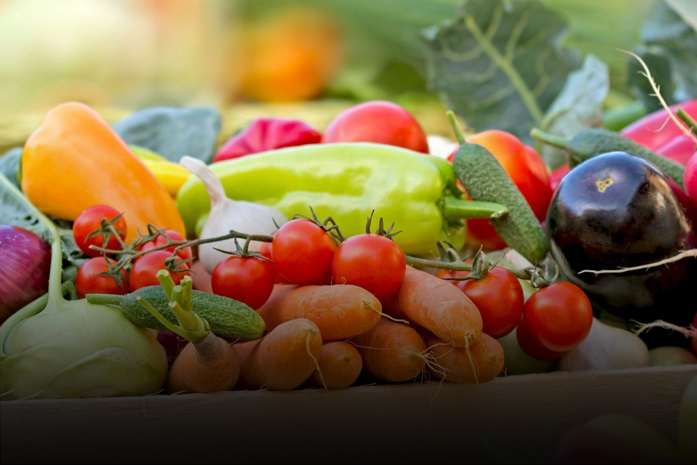

Produtos Orgânicos
A Trebeschi tem o orgulho de divulgar sua marca de produtos orgânicos a A’Doro, que destaca o início da produção com o Tomate tipo Italiano com alta qualidade e muito saboroso. A nossa linha de orgânicos será produzida em áreas com certificação Global Gap, o que permite demonstrar maior segurança e a sustentabilidade envolvidas no sistema de produção, além de possuir a embalagem 100% reciclável. Aproveite para se deliciar com essa linha de produtos que trará mais novidades em 2020.
Produtos Embalados
ABCD
Turma da Mônica
ABCD

Produtos Granel
ABCD